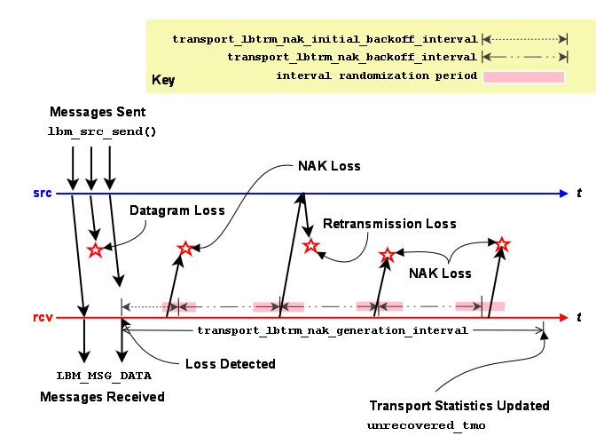
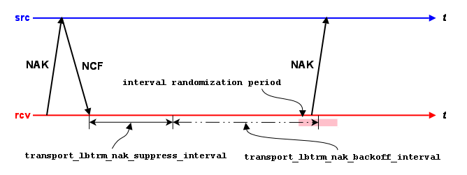

LBT-RM Datagram <-
Loss Resulting in Unrecovered Message Loss
An LBT-RM receiver will attempt to recover lost datagrams. The options transport_lbtrm_nak_backoff_interval (receiver) and transport_lbtrm_nak_generation_interval (receiver) control the timing of the recovery effort. Timers for both start when loss is detected. The following timeline illustrates a case where a receiver is notified of unrecoverable message loss following repeated datagram loss.

- Note
- the actual length of the interval randomization periods are between 1/2 and 3/2 of the configured interval value. In the diagram above, time periods are not drawn to scale to simplify the diagram.
Set transport_lbtrm_nak_backoff_interval (receiver) to the NAK service time that could be reasonably expected from the receiver's location in the network plus some cushion for network congestion. Set transport_lbtrm_nak_generation_interval (receiver) to the latency budget established for the transport layer. See our whitepaper Topics in High Performance Messaging for background on latency budgets. See also the KB article Reducing Loss Recovery Latencies for more advice on tuning.
- Note
- these parameters relate to loss at the transport session (datagram) level, not the topic level. See Delivery Control Options for information on how applications are informed of topic-level unrecoverable loss.
LBT-RM Source Ignoring NAKs for Efficiency <-
Bandwidth efficiency of an LBT-RM source may be improved by avoiding useless retransmissions. Consider the case of an LBT-RM source that has received a NAK for a datagram that it has just retransmitted. If the NAK and the retransmission crossed on the network, it is likely that the receiver generating the NAK will receive the retransmission just sent. If so, there's no need for the source to send another retransmission, so the NAK can be safely ignored.
NAKs for a given datagram are ignored for transport_lbtrm_ignore_interval (source) following the retransmission of that datagram. A NAK will be serviced as normal following the passage of the interval.
When ignoring a NAK, the source can send an NCF (NAK ConFirmation) instead of a retransmission. See NAK Suppression for more information.
LBT-RM Receiver Suppressing NAK Generation <-
LBT-RM sources want receivers to be notified that their NAKs have been heard. Prompt notification via a retransmission or NCF can suppress useless NAK generation. There are a variety of circumstances where the source does not send a retransmission in response to a receiver's NAK. For example, NAKs received during the ignore interval do not generate retransmissions. Another example would be if previous retransmissions have used up all the retransmission bandwidth for the current rate limiter interval.
The image below illustrates a receiver's reaction to an NCF.

Following the receipt of an NCF, a receiver suppresses all NAK generation for that sequence number until transport_lbtrm_nak_suppress_interval (receiver) passes. NAK generation resumes with the usual transport_lbtrm_nak_backoff_interval (receiver) if repair was not received during the suppression interval.
- Note
- the actual length of the interval randomization period is between 1/2 and 3/2 of the configured interval value. In the diagram above, time periods are not drawn to scale to simplify the diagram.
Reference <-
transport_lbtrm_ignore_interval (source) <-
- The interval to ignore NAKs after a retransmission is sent.
- This should less than or equal to half the transport_lbtrm_nak_backoff_interval (receiver). If it is larger than that, you risk increasing your "ignore" NCFs and wasting NAKs. Note that the default values for these options do not conform to this rule.
- This option affects the transport session underlying the source rather than the source itself. The transport session uses the value from the first source created on the session and ignores subsequent sources' configuration.
- Refer to Source Object for additional information.
| Scope: | source |
| Type: | lbm_ulong_t |
| Units: | milliseconds |
| Default value: | 500 (0.5 seconds) |
| When to Set: | Can only be set during object initialization. |
transport_lbtrm_nak_backoff_interval (receiver) <-
- The maximum interval between transmissions of LBT-RM NAKs for a given sequence number, after the first NAK.
- When an LBT-RM receiver detects a sequence number gap, it delays an initial amount before sending its first NAK (controlled by transport_lbtrm_nak_initial_backoff_interval (receiver)), and then delays an a separately configurable time between sending subsequent NAKs for the same sequence number. This configuration option controls those subsequent delays.
- The actual time the receiver will wait to NAK again is random. The algorithm used to determine the time range is (1/2 * backoff_interval - 3/2 * backoff_interval). This will result in a delay longer or shorter than the specified value.
- This should be greater than or equal to twice the transport_lbtrm_ignore_interval (source). If it is less than that, you risk increasing your "ignore" NCFs and wasting NAKs. Note that the default values for these options do not conform to this rule.
- This option affects the transport session underlying the receiver rather than the receiver itself. The transport session uses the value from the first receiver created on the session and ignores subsequent receivers' configuration.
- See also transport_lbtrm_nak_initial_backoff_interval (receiver).
| Scope: | receiver |
| Type: | lbm_ulong_t |
| Units: | milliseconds |
| Default value: | 200 (0.2 seconds) |
| When to Set: | Can only be set during object initialization. |
transport_lbtrm_nak_generation_interval (receiver) <-
- The maximum time that a piece of data may be outstanding before the data is unrecoverably lost.
- For LBT-RM transport sessions only. Although the minimum valid value is 5 milliseconds, larger values are advisable. This option affects the transport session underlying the receiver rather than the receiver itself. The transport session uses the value from the first receiver created on the session and ignores subsequent receivers' configuration.
- Refer to Receiver Object and Interrelated Configuration Options for additional information.
| Scope: | receiver |
| Type: | lbm_ulong_t |
| Units: | milliseconds |
| Default value: | 10000 (10 seconds) |
| When to Set: | Can only be set during object initialization. |
transport_lbtrm_nak_initial_backoff_interval (receiver) <-
- The interval between loss detection and transmission of the first LBT-RM NAK.
- When an LBT-RM receiver detects a sequence number gap, it delays an initial amount before sending its first NAK controlled by this option, and then delays an a separately configurable time between sending subsequent NAKs for the same sequence number, controlled by transport_lbtrm_nak_backoff_interval (receiver).
- The actual time the receiver will wait to NAK is random. The algorithm used to determine the time range is (1/2 * initial_backoff_interval - 3/2 * initial_backoff_interval). This will result in a delay longer or shorter than the specified value. A value of 0 indicates that the receiver should immediately send a NAK. Note that this is rarely a good idea; see UM Recovery of Lost Packets.
- This option affects the transport session underlying the receiver rather than the receiver itself. The transport session uses the value from the first receiver created on the session and ignores subsequent receivers' configuration.
- See also transport_lbtrm_nak_backoff_interval (receiver).
| Scope: | receiver |
| Type: | lbm_ulong_t |
| Units: | milliseconds |
| Default value: | 50 (0.05 seconds) |
| When to Set: | Can only be set during object initialization. |
| Version: | This option was implemented in LBM 3.4/UME 2.1. |
transport_lbtrm_nak_suppress_interval (receiver) <-
- The time that an LBT-RM receiver will suppress sending a NAK for a missing datagram after an NCF is received from the source.
- The source sends an NCF in response to a NAK which the source temporarily cannot retransmit. For example, if the source gets a NAK for a sequence number for which it has recently sent a retransmission, it will send an NCF with reason code "ignored".
- The receiver responds by adding this option's time value to the NAK re-try timeout currently set for this sequence number. See NAK Suppression for more information about NCFs.
- For LBT-RM transport sessions only. This option affects the transport session underlying the receiver rather than the receiver itself. The transport session uses the value from the first receiver created on the session and ignores subsequent receivers' configuration.
- Refer to Receiver Object for additional information.
| Scope: | receiver |
| Type: | lbm_ulong_t |
| Units: | milliseconds |
| Default value: | 1000 (1 second) |
| When to Set: | Can only be set during object initialization. |
transport_lbtrm_receiver_socket_buffer (context) <-
- Value used to set the SO_RCVBUF socket option for the LBT-RM multicast receiving socket.
- In some cases the OS will not allow all of this value to be used.
- See Socket Buffer Sizes for platform-dependent information. See also our white paper Topics in High Performance Messaging for background and guidelines on UDP buffer sizing.
| Scope: | context |
| Type: | lbm_ulong_t |
| Units: | bytes |
| Default value: | 8388608 (8MB) |
| When to Set: | Can only be set during object initialization. |
transport_lbtrm_send_naks (receiver) <-
- This flag indicates whether LBT-RM should send negative acknowledgements (NAKs) for missing packets or not.
- For LBT-RM transport sessions only. This option affects the transport session underlying the receiver rather than the receiver itself. The transport session uses the value from the first receiver created on the session and ignores subsequent receivers' configuration.
- Refer to Receiver Object for additional information.
| Scope: | receiver |
| Type: | int |
| When to Set: | Can only be set during object initialization. |
| Value | Description |
| 1 | NAKs are sent for missing packets to request retransmission. Default for all. |
| 0 | Do not send NAKs for missing packets.
|
transport_lbtrm_source_socket_buffer (context) <-
- Value used to set the SO_SNDBUF socket option for the LBT-RM multicast sending socket. multicast socket.
- In some cases the OS will not allow all of this value to be used.
- See Socket Buffer Sizes for platform-dependent information. A value of 0 instructs UM to use the OS default.
| Scope: | context |
| Type: | lbm_ulong_t |
| Units: | bytes |
| Default value: | 1048576 (1MB) |
| When to Set: | Can only be set during object initialization. |
transport_lbtrm_transmission_window_limit (source) <-
- Caps the total amount of memory that a transmission window uses, which includes data and overhead.
- For example, if the transport_lbtrm_transmission_window_size (source) is 24 MB (default) and the source sends (with flush flag set) 1.2 million messages with a 20-byte payload and 230-byte header, the actual amount of memory used can approximate 300 MB. The default value of 0 (zero) disables the transmission window size limit.
| Scope: | source |
| Type: | size_t |
| Units: | bytes |
| Default value: | 0 (disables limit) |
| When to Set: | Can only be set during object initialization. |
transport_lbtrm_transmission_window_size (source) <-
- The maximum amount of buffered payload data, excluding UM headers, that the LBT-RM source is allowed to retain for retransmissions.
- The minimum valid value is 65,536 bytes. This option affects the transport session underlying the source rather than the source itself. The transport session uses the value from the first source created on the session and ignores subsequent sources' configuration.
| Scope: | source |
| Type: | size_t |
| Units: | bytes |
| Default value: | 25165824 (24 MB) |
| When to Set: | Can only be set during object initialization. |